Slide 1PUNK ROCK
ENGINEERING
Build Fast. Break Things. Learn Everything.
An FRC Engineering Lecture | Inspired by SuperfastMatt
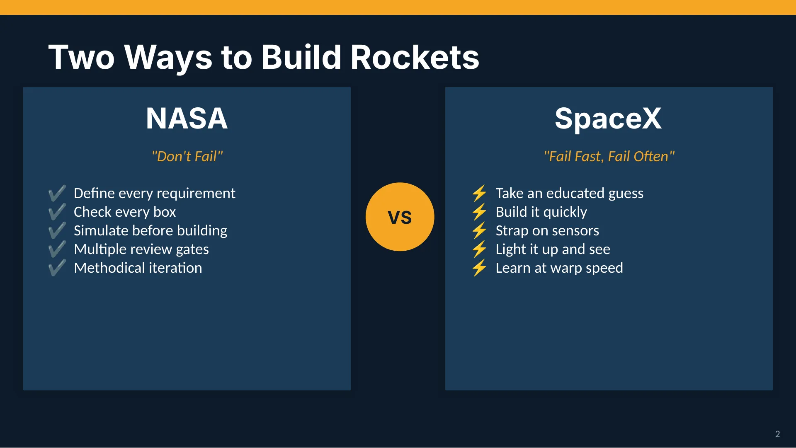
Slide 2Two Ways to Build Rockets
NASA
"Don't Fail"
✔ Define every requirement
✔ Check every box
✔ Simulate before building
✔ Multiple review gates
✔ Methodical iteration
SpaceX
"Fail Fast, Fail Often"
⚡ Take an educated guess
⚡ Build it quickly
⚡ Strap on sensors
⚡ Light it up and see
⚡ Learn at warp speed
VS
2
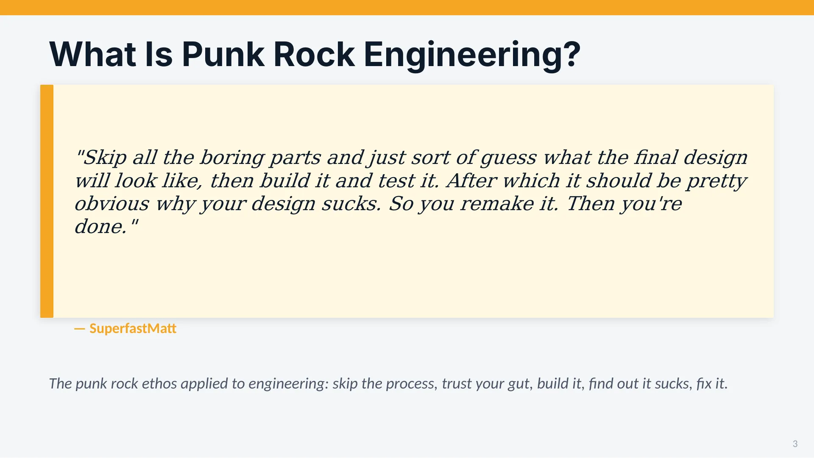
Slide 3What Is Punk Rock Engineering?
"Skip all the boring parts and just sort of guess what the final design will look like, then build it and test it. After which it should be pretty obvious why your design sucks. So you remake it. Then you're done."
— SuperfastMatt
The punk rock ethos applied to engineering: skip the process, trust your gut, build it, find out it sucks, fix it.
3
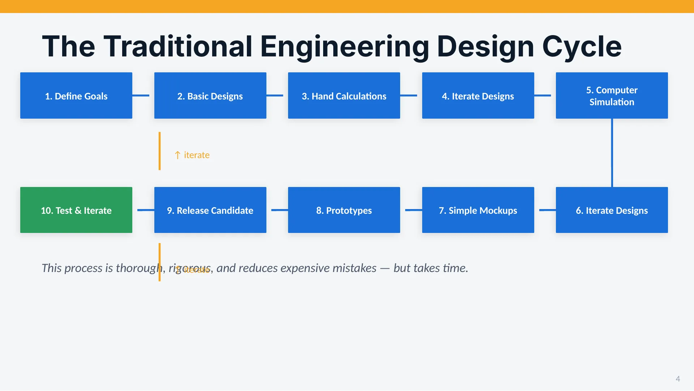
Slide 4The Traditional Engineering Design Cycle
1. Define Goals
2. Basic Designs
3. Hand Calculations
4. Iterate Designs
5. Computer Simulation
6. Iterate Designs
7. Simple Mockups
8. Prototypes
9. Release Candidate
10. Test & Iterate
This process is thorough, rigorous, and reduces expensive mistakes — but takes time.
↑ iterate
↑ iterate
4
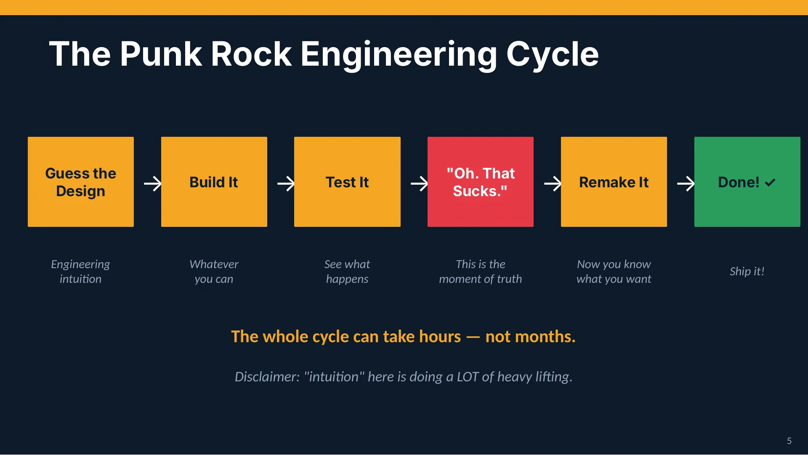
Slide 5The Punk Rock Engineering Cycle
Guess the
Design
→
Build It
→
Test It
→
"Oh. That
Sucks."
→
Remake It
→
Done! ✓
Engineering
intuition
Whatever
you can
See what
happens
This is the
moment of truth
Now you know
what you want
Ship it!
The whole cycle can take hours — not months.
Disclaimer: "intuition" here is doing a LOT of heavy lifting.
5
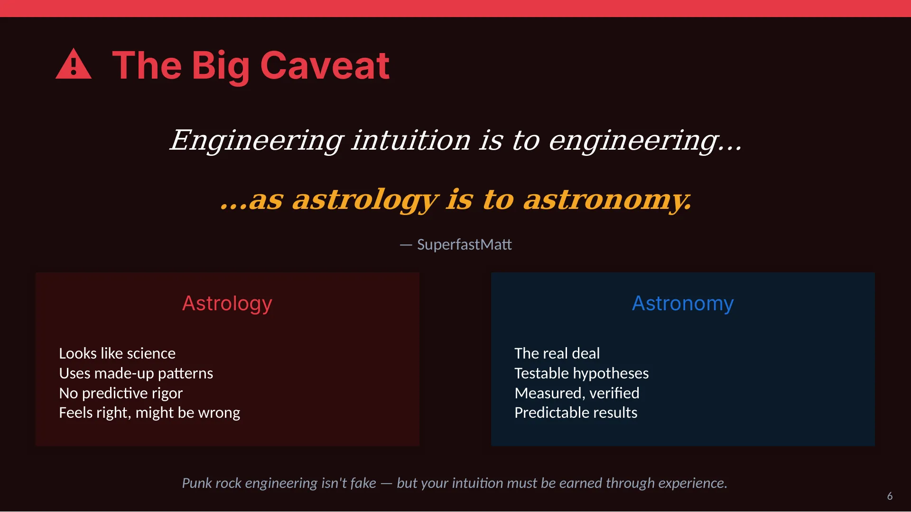
Slide 6⚠ The Big Caveat
Engineering intuition is to engineering...
...as astrology is to astronomy.
— SuperfastMatt
Astrology
Looks like science
Uses made-up patterns
No predictive rigor
Feels right, might be wrong
Astronomy
The real deal
Testable hypotheses
Measured, verified
Predictable results
Punk rock engineering isn't fake — but your intuition must be earned through experience.
6
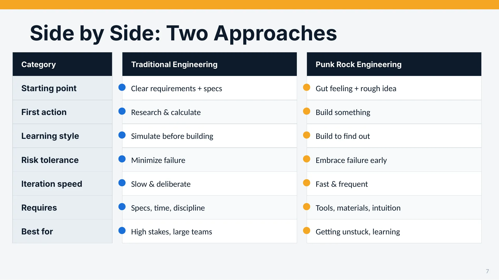
Slide 7Side by Side: Two Approaches
Category
Traditional Engineering
Punk Rock Engineering
Starting point
Clear requirements + specs
Gut feeling + rough idea
First action
Research & calculate
Build something
Learning style
Simulate before building
Build to find out
Risk tolerance
Minimize failure
Embrace failure early
Iteration speed
Slow & deliberate
Fast & frequent
Requires
Specs, time, discipline
Tools, materials, intuition
Best for
High stakes, large teams
Getting unstuck, learning
7
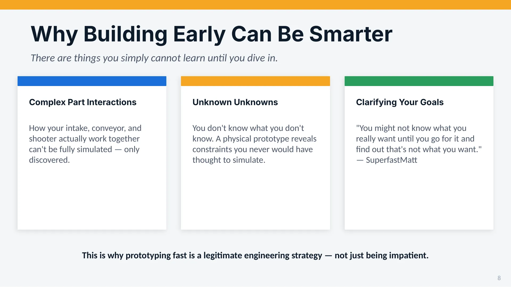
Slide 8Why Building Early Can Be Smarter
There are things you simply cannot learn until you dive in.
Complex Part Interactions
How your intake, conveyor, and shooter actually work together can't be fully simulated — only discovered.
Unknown Unknowns
You don't know what you don't know. A physical prototype reveals constraints you never would have thought to simulate.
Clarifying Your Goals
"You might not know what you really want until you go for it and find out that's not what you want." — SuperfastMatt
This is why prototyping fast is a legitimate engineering strategy — not just being impatient.
8
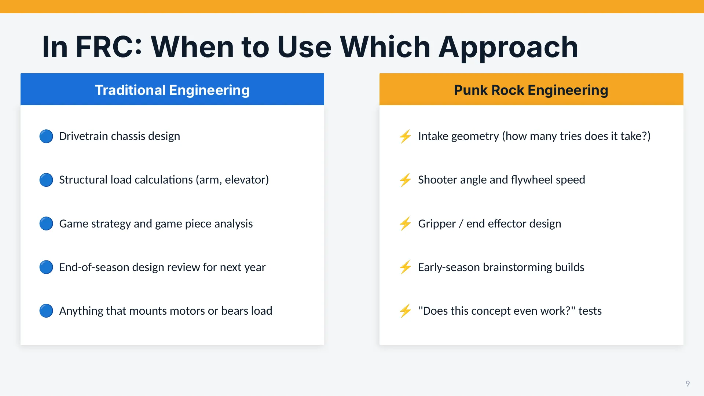
Slide 9In FRC: When to Use Which Approach
Traditional Engineering
🔵 Drivetrain chassis design
🔵 Structural load calculations (arm, elevator)
🔵 Game strategy and game piece analysis
🔵 End-of-season design review for next year
🔵 Anything that mounts motors or bears load
Punk Rock Engineering
⚡ Intake geometry (how many tries does it take?)
⚡ Shooter angle and flywheel speed
⚡ Gripper / end effector design
⚡ Early-season brainstorming builds
⚡ "Does this concept even work?" tests
9
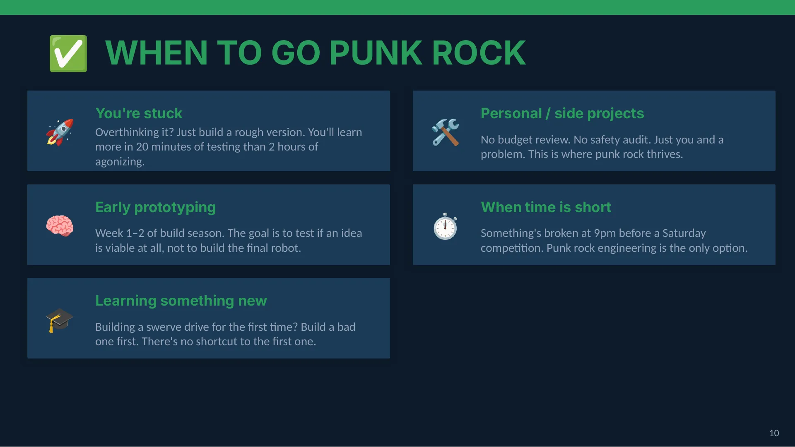
Slide 10✅ WHEN TO GO PUNK ROCK
🚀
You're stuck
Overthinking it? Just build a rough version. You'll learn more in 20 minutes of testing than 2 hours of agonizing.
🧠
Early prototyping
Week 1–2 of build season. The goal is to test if an idea is viable at all, not to build the final robot.
🎓
Learning something new
Building a swerve drive for the first time? Build a bad one first. There's no shortcut to the first one.
🛠
Personal / side projects
No budget review. No safety audit. Just you and a problem. This is where punk rock thrives.
⏱
When time is short
Something's broken at 9pm before a Saturday competition. Punk rock engineering is the only option.
10
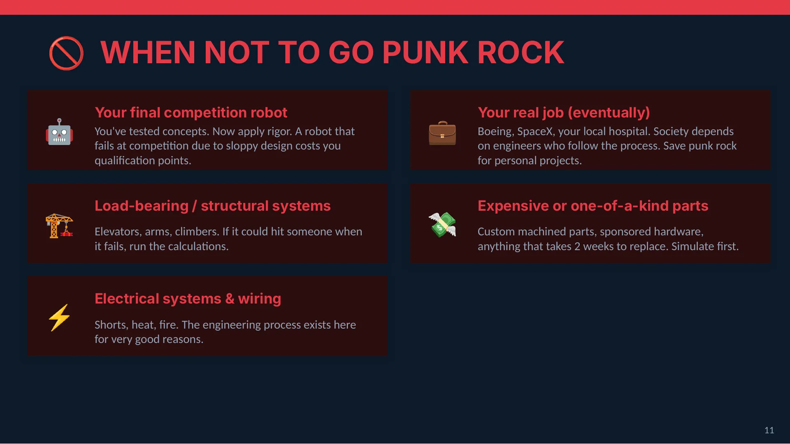
Slide 11🚫 WHEN NOT TO GO PUNK ROCK
🤖
Your final competition robot
You've tested concepts. Now apply rigor. A robot that fails at competition due to sloppy design costs you qualification points.
🏗
Load-bearing / structural systems
Elevators, arms, climbers. If it could hit someone when it fails, run the calculations.
⚡
Electrical systems & wiring
Shorts, heat, fire. The engineering process exists here for very good reasons.
💼
Your real job (eventually)
Boeing, SpaceX, your local hospital. Society depends on engineers who follow the process. Save punk rock for personal projects.
💸
Expensive or one-of-a-kind parts
Custom machined parts, sponsored hardware, anything that takes 2 weeks to replace. Simulate first.
11
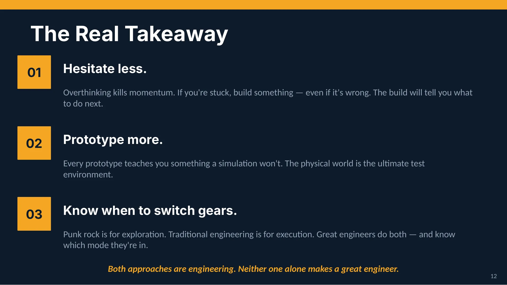
Slide 12The Real Takeaway
01
Hesitate less.
Overthinking kills momentum. If you're stuck, build something — even if it's wrong. The build will tell you what to do next.
02
Prototype more.
Every prototype teaches you something a simulation won't. The physical world is the ultimate test environment.
03
Know when to switch gears.
Punk rock is for exploration. Traditional engineering is for execution. Great engineers do both — and know which mode they're in.
Both approaches are engineering. Neither one alone makes a great engineer.
12
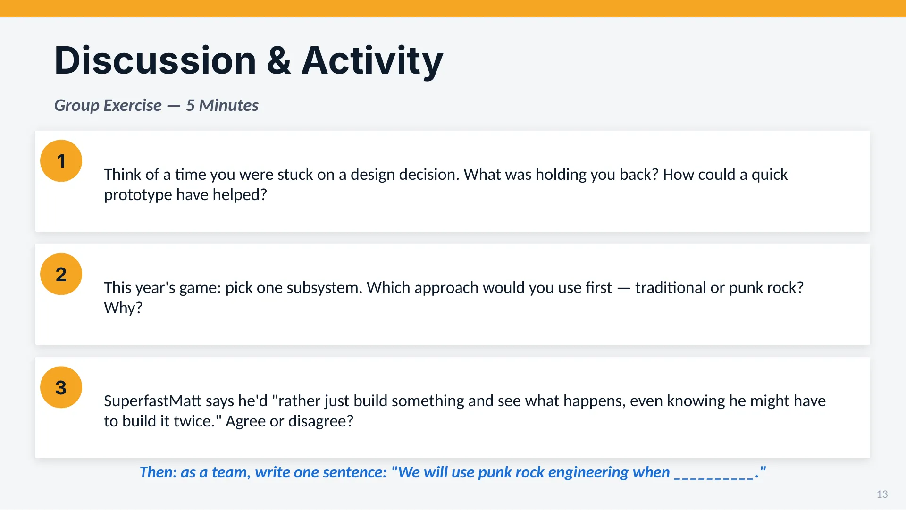
Slide 13Discussion & Activity
Group Exercise — 5 Minutes
1
Think of a time you were stuck on a design decision. What was holding you back? How could a quick prototype have helped?
2
This year's game: pick one subsystem. Which approach would you use first — traditional or punk rock? Why?
3
SuperfastMatt says he'd "rather just build something and see what happens, even knowing he might have to build it twice." Agree or disagree?
Then: as a team, write one sentence: "We will use punk rock engineering when __________."
13